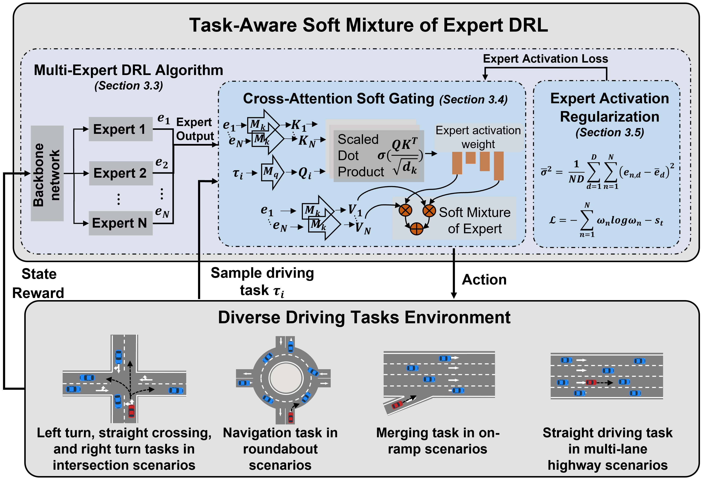
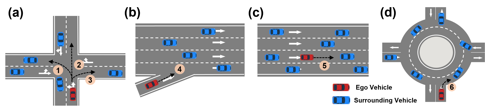
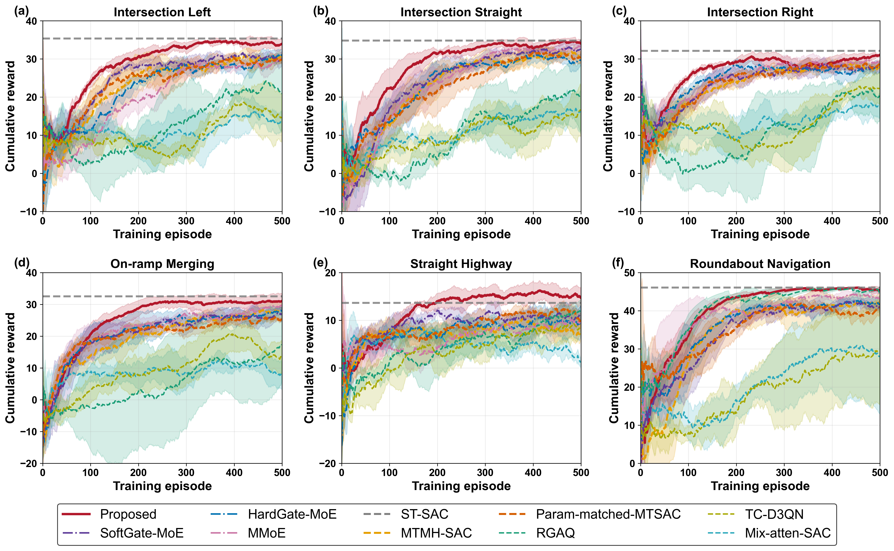
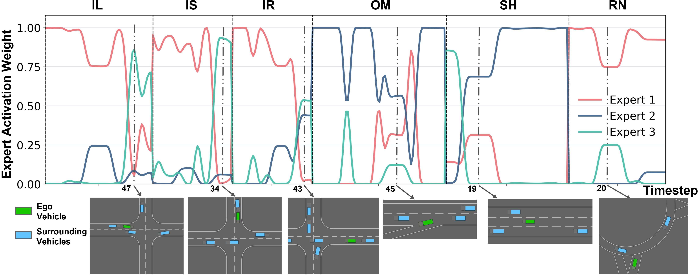

Unified multi-task policy for diverse autonomous driving scenarios.
Abstract
Achieving reliable decision-making across a wide range of driving scenarios is a primary goal of intelligent vehicles. Existing studies typically focus on developing specialized driving policies for specific scenarios, which exhibit limited generalizability and may fail to ensure robust safety across diverse tasks encountered in real-world environments. To address these limitations, we propose Task-Aware Soft Mixture of Experts Deep Reinforcement Learning, a unified and generalizable driving policy for multi-scenario autonomous driving. TASME-DRL introduces a cross-attention soft gating mechanism for task-aware expert aggregation and an adaptive expert activation regularization method for balanced expert utilization. Experiments show that the framework reduces negative transfer in multi-task learning and improves robustness, adaptability, and generalization across diverse and unseen driving tasks.
Cross-attention soft gating for task-aware expert mixture.
Adaptive activation regularization for balanced expert utilization.
Strong training, testing, robustness, and generalization performance.
Framework
Task-Aware Routing
The policy uses task representations as queries and expert outputs as key-value features. Cross-attention scores estimate task-expert compatibility, then softly aggregate the expert policies into a single task-conditioned decision representation.
Balanced Specialization
Adaptive expert activation regularization prevents premature expert collapse while preserving state-dependent specialization, allowing related tasks to share useful expert knowledge without forcing all tasks through one dominant route.

Driving Tasks

Intersection Left
Intersection Straight
Intersection Right
Ramp Merge
Straight Highway
Roundabout
Training Compare

The experiments show that TASME-DRL improves training efficiency and overall driving performance across multiple driving tasks. Compared with baseline methods, the proposed task-aware soft mixture of experts reduces performance degradation caused by negative transfer in multi-task learning.
CARLA Demonstrations
Intersection Left
The ego vehicle completes a left-turn maneuver while interacting with surrounding traffic.
Per-Step Expert Activation Analysis
Step-level activation weights reveal how the soft gating module adjusts the expert mixture with changes in local driving states. The synchronized videos connect these activation patterns with the corresponding driving behavior.

Intersection Left
Expert activation during a left-turn intersection trajectory.